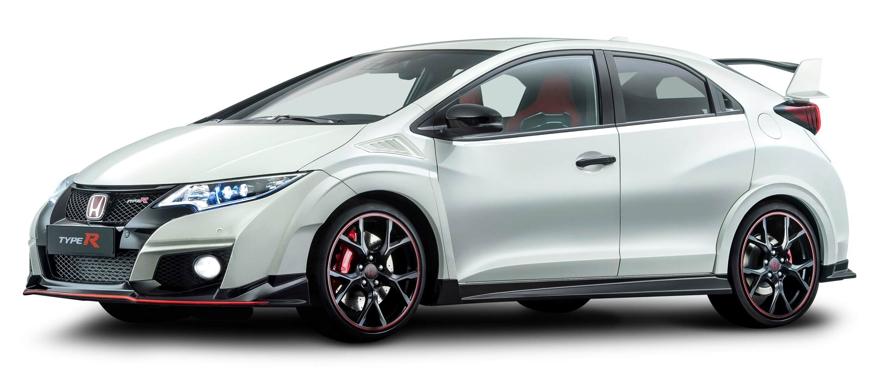
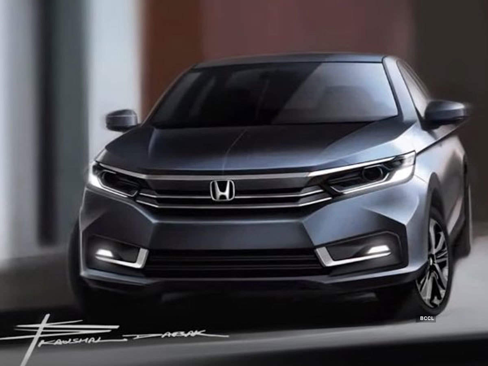
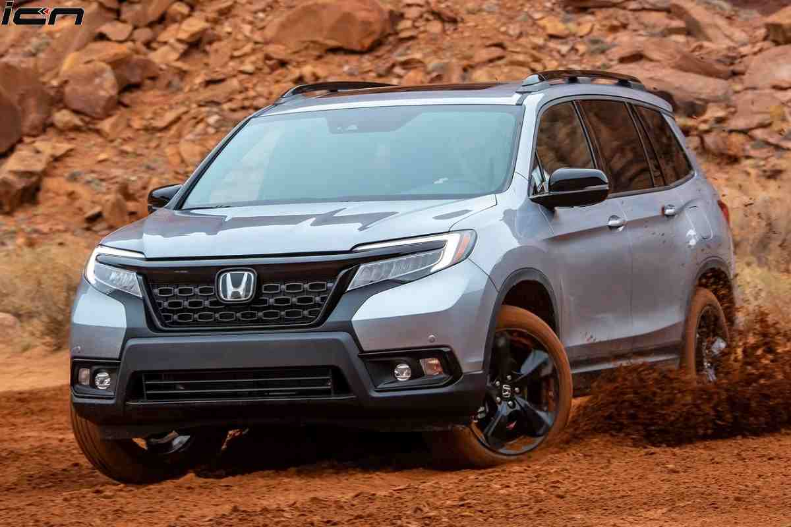

7. HONDA :

Honda is a Japanese public multinational Conglomerate manufacturer of automiblies , motor cycles and power equipment, headquaters in Minato, Tokyo Japan.


Trades as :
TYO: 7267 , NYSE: HMC , Nikkei: 225 component , TOPIX core 30
Industry :
Conglomerate
Industry :
Conglomerate
Founded :
Homatasu , Japan (october 1946 , incorporated 24 september 1948;)
Founders :
Soichiro Honda , Takeo Fujisawa
Headquaters :
Minato , Tokyo , Japan
Area Served :
World Wide
Key People :
Toshiaki Mikoshiba ( chairman ) , Takahiro Hachigo ( president and CEO)
Products :
Automobiles, Commercial vehicles, Luxury Vehicles, motor cycles, Scooters, jet aircrafts, jet engines
Divison :
Automobiles, Commercial vehicles, Luxury Vehicles, motor cycles, Scooters, jet aircrafts, jet engines
Website :
global.honda
